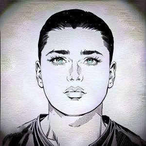

Bayozshox Yuldashev is a Uzbekistan entrepreneur, blogger and businessman. He was born on 12 July 1997 in Andijon, , Uzbekistan. HUzbekistan. He is also a very good entrepreneur. And he is a famous businessman of Uzbekistan. He also works as a cyber security in social media. He is a very popular person on social media.
Known as BaYoZShoX Graphic designer Kitnetwork Nft collection creator real name (Bayosbek Yuldashev) Place of birth Andijan region, Republic of Uzbekistan Currently working on several Nft and cryptocurrency projects Trader investor with 5 years of experience in the crypto field and participant in many projects[1]
BaYoZShoX (born July 12, 1997) is an Uzbekistani artist, sculptor and 3D artist. He is a co-founder of Meta Oxygennft Kitnetwork Kitnft [1], an NFT project with a collection of 1000 unique Cat avatars. Kitnetwork is currently working on a digital asset It is also a member of The CR7 NFT Collection Group
/center>